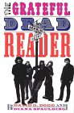

Now available in paperback as of December 2001!
Now available in paperback as of December 2001!


Now available in paperback as of December 2001!
A glorious, kaleidoscopic look at the greatest tour band in the history of rockHere is an exciting collection of writings about The Grateful Dead, offering both classic and hard-to-find essays, reporting, and reviews.
Arranged in chronological order, these pieces add up to nothing less than a full-scale history of the group--from Tom Wolfe's account of the Dead's first performance (at an Acid Test in 1965), to Ralph Gleason's 1967 interview with the 24-year-old Jerry Garcia, to Mary Eisenhart's obituary of the great guitarist. Powerful, incisive, and always imaginative, these selections include not only outstanding writing on the Grateful Dead, but also superb pieces on music and pop culture generally. And alongside the words of Tom Wolfe, George W.S. Trow, and Robert Christgau, readers will find poetry, fiction, drawings, and an offering of rare and revealing photographs. Fans will be fascinated by this anthology's many interviews and profiles, interpretations of lyrics, and concert and record reviews. Yet The Grateful Dead was more than a band--it was a cultural phenomenon. For three decades it remained on one unending tour, followed everywhere by a small army of nomadic fans who constituted a virtual cult. The writers in The Grateful Dead Reader both celebrate and analyze this phenomenon, in such pieces as Ed McClanahan's groundbreaking article in Playboy in 1972, fan-magazine editor Blair Jackson's 1990 essay on the seriousness of the drug situation at Dead concerts, and Steve Silberman's insightful essays on the music and its fans.
The Grateful Dead Reader brims with some of the best writing on music, on popular culture, and on a band that helped define a generation.
"An engaging, thoughtfully selected collection of the best writing about the Grateful Dead's remarkable journey, by some of its savviest critics--Ralph Gleason, Richard Melzer, Robert Christgau, Blair Jackson, Steve Silberman--as well as "insiders" like Robert Hunter, Dennis McNally, David Gans, and Alan Trist. A must-read for anyone interested in the Grateful Dead, 60s counter-culture, or the achievements of American popular music." -- Fredric Lieberman, Professor of Music, U.C. Santa Cruz
"At last a literary road map for the long strange tripster in us all."-Wavy Gravy